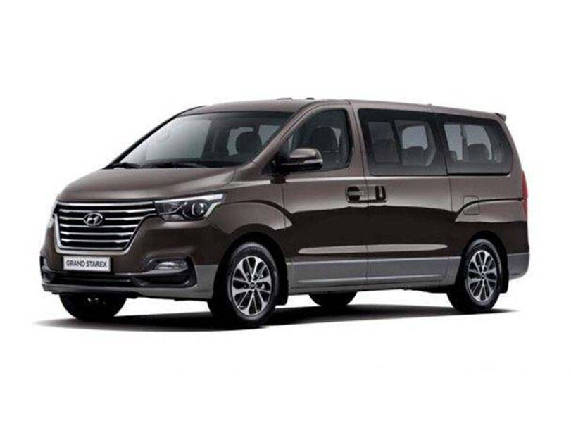

>
| Sr.No |
Picture |
URL |
Description |
| 1 |
 |
Sportage showroom in Pakistan |
Kia Sportage is the most luxurious, comfortable SUV car available in
Pakistani Car Market with three different variants available Kia Sportage 2.0L Alpha, 2.0L FWD, and 2.0L AWD. |
| 2 |
|
Hundai Tuscon specs and features along with price
|
Hyundai Tucson is a compact crossover SUV manufactured by the South Korean automobile manufacturer Hyundai.
The car was first launched in 2004 and is Hyundai’s best-selling SUV to date. |
| 3 |
 |
Honda Vezel variants with their specs and features along with price range
|
The price of Honda Vezel in Pakistan ranges from PKR 7,000,000 to PKR 13,900,000 for a used Honda Vezel.
These prices of Honda Vezel in Pakistan vary on model year, mileage, variant and overall condition of the car.
|
| 4 |
 |
Honda BRV specs and features along with price
|
Honda BR-V is a subcompact crossover SUV manufactured by the Japanese automobile manufacturer Honda.
In Pakistan, Honda BR-V was launched in 2017 as an affordable 7-seater SUV.
Initially, Honda launched 3 trims of the BR-V namely: Honda BR-V i-VTEC, i-VTEC MT, and i-VTEC S.
In 2019, the BR-V received a facelift with an improved exterior and more interior features.
The facelifted version is the only trim currently available in Pakistan.
|
| 5 |
 |
Toyota Hilux Vigo specs and features and its price
in Pakistan
|
The price of a used Toyota Hilux Vigo V in Pakistan starts from PKR 3,750,000.
This price of Hilux Vigo V in Pakistan varies on model year, mileage, and overall condition of the variant.
Toyota Hilux Vigo V is available in 8 different colours
- Attitude Black, Bronze Mica, Gun Metallic, Medium Silver, Metallic Flexin, Strong Blue, Super White, and White
|
| 6 |
 |
Changan Alsvin specifications and features along its price
in Pakistan
|
The price of Changan Alsvin 2023 in Pakistan ranges from PKR 3,899,000
for the base variant 1.3L MT Comfort to PKR 4,499,000 for the top of the line 1.5L DCT Lumiere variant.
Its front houses a butterfly grille which gives it a wider exposed area to increase per second intake and heat transfer. The car has dual waist design which, according to the company,
provides aerodynamic streamline motion and reduces fuel consumption as a result.
|
| 7 |
 |
Hyundai Grand Starex specifications and features along with its price
in Pakistan
|
The price of Hyundai Grand Starex in Pakistan ranges from PKR 4,549,000 to PKR 5,899,000 for a used Hyundai Grand Starex.
Currently, the company is selling the second generation of Grand Starex, which received a facelift in 2018. The vehicle has a muscular front facia with all the curves. The premium class interior is a class apart.
The company has made all the efforts to make this car more up to date with all the modern features and sleek design.
|
| 8 |
 |
Honda Grace specifications, features and price
in Pakistan
|
In Pakistan, Honda has recently launched the plain 6th generation City.
It’s hybrid variant (Honda Grace) has no signs of coming to the local market. However, Pakistanis have been importing this Japanese Domestic Model (JDM) Grace since 2017.
Honda Grace is an economy car with outstanding design aesthetics. The car has an excellent fuel economy, best among all hybrid sedans in the market.
This hybrid sedan gives the passengers the driving experience of an upper middle class vehicle.
|
| 9 |
|
Toyota Grande specifications, features and price
in Pakistan
|
Toyota Grande 2022 is equipped with 1.8L engine which is more powerful so you can enjoy the power and luxury but compromise with fuel average.
Toyota Grande 2022 fuel average is between 12Km/L to 14Km/L also depends on driving habit of the driver.
|
| 10 |
|
Toyota Prius specs , features and price
| Toyota Prius was launched in 1997 as a hybrid vehicle.
Its exterior styling was unconventional at that time.
It has a fastback style and resembles hatchbacks to some extent.
Toyota Prius is not only a fuel-efficient vehicle but also produces much fewer carbon emissions compared to other vehicles.
At first, the Prius was only available in Japan. In 2000, Toyota made it available worldwide as the first mass-produced hybrid vehicle.
The latest Prius available in the market is the fourth-generation Toyota Prius.
|